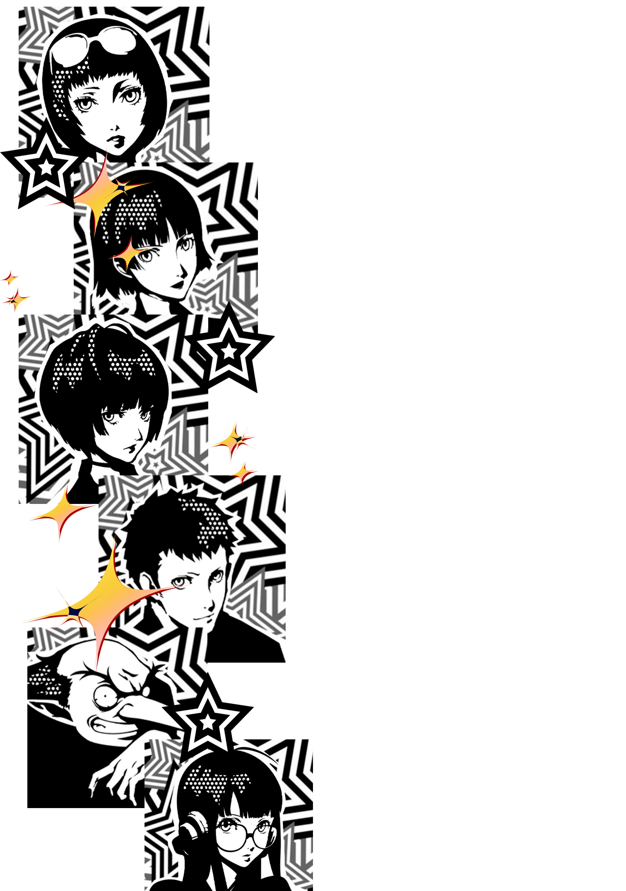
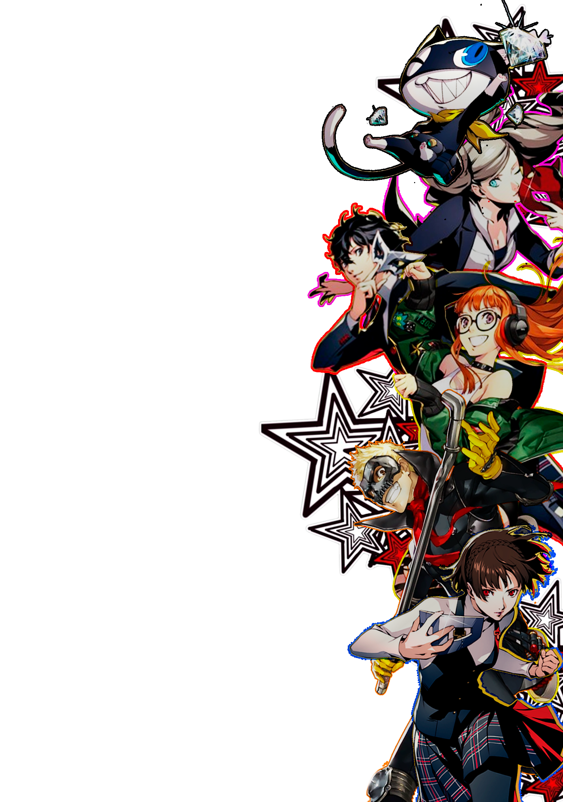
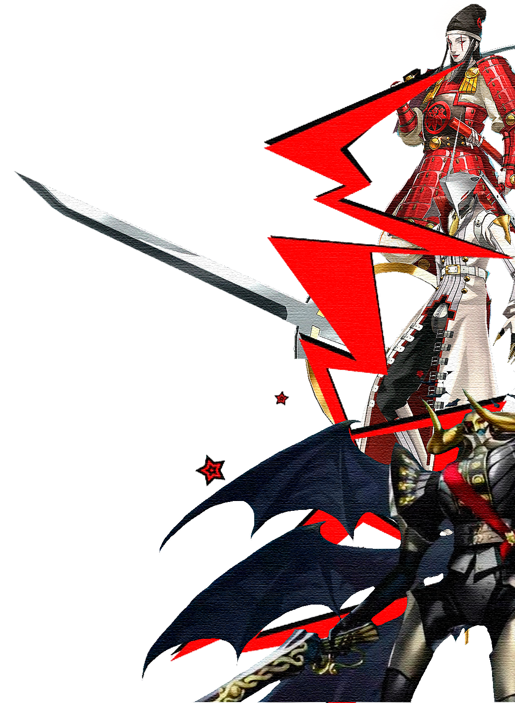

⚠️ PRAZO LIMITE — NÃO FALHE NESSES:
• MARUKI (Consultant) → Rank 9 antes de 11/18 — Final Verdadeiro! | • AKECHI (Justice) → Rank 8 antes de 11/17 | • KASUMI (Faith) → Rank 5 antes de 12/22 | • C&J (Strength) → Rank 10 antes de 12/24


GUIA DE PERSONAS
Tudo sobre Personas: as mais poderosas do jogo, quais farmar em Mementos, dicas de fusão, Treasure Demons e como montar o Compêndio perfeito.

| Persona ▾ | Arcano | Lvl | Fusão (Receita mais barata) | Obs |
|---|
⚔️ BUILDS & EQUIPAMENTOS
Itens, armas, armaduras e acessórios mais poderosos do jogo. Como conseguir os melhores equipamentos e montar builds otimizadas para cada situação.
📅 GUIA MENSAL DE OTIMIZAÇÃO
Baseado nos guias PSNProfiles e bai-gaming. Royal tem tempo suficiente para maxar tudo — mas as Prazo limíte de Maruki (11/18), Akechi (11/17) e Kasumi (12/22) são críticas para o True Ending e a Platina.
💡 REGRAS DE OURO DO LADRÃO FANTASMA
🗺️ ROTEIRO PARA A PLATINA
⚠️ TROFÉUS PERDÍVEIS — PRESTE ATENÇÃO!
✅ TROFÉUS GARANTIDOS (UNMISSABLE)
💡 DICAS GERAIS DE TROFÉUS
💰 GUIA DE DINHEIRO
Dinheiro é essencial para equipamentos, itens de cura, fusões especiais e completar o Compêndio. No início do jogo é escasso — economize! Fica abundante a partir do meio do jogo.
⚔️ MELHORES ITENS E EQUIPAMENTOS
❤️ GUIA DE ROMANCES
10 Confidants romanceáveis. Para romancear, escolha as opções corretas nos ranks específicos. O troféu "A Special Lady" requer apenas 1 romance. Namorar múltiplas = diálogo engraçado especial em 14/2!
🎁 BENEFÍCIOS DE ROMANCE
💔 NÃO PODEM SER NAMORADAS
🌸 NOTA ESPECIAL: KASUMI / SUMIRE
Kasumi só pode ser namorada como Sumire — ou seja, você só consegue romancear ela no 3º Semestre (após 1/13), quando ela revela sua verdadeira identidade. O romance com Kasumi/Sumire requer Rank 10 e só é possível no True Ending. Ela não te dará presente de Natal porque o romance não pode ser iniciado antes de 12/24.
🎓 RESPOSTAS DA ESCOLA
Responder corretamente aumenta seu stat Knowledge. Quando Ann é perguntada e você a ajuda, ganha Charm e pontos de Confidant com ela.
📊 STATUS SOCIAL
Existem 5 stats sociais que crescem fora do combate. Eles desbloqueiam Confidants, empregos e diálogos especiais. Cada stat tem 5 ranks com nomes próprios. Dias de chuva aumentam os pontos de estudo — aproveite sempre!
| Stat | Rank 1 | Rank 2 | Rank 3 | Rank 4 | Rank 5 |
|---|---|---|---|---|---|
| 📚 Knowledge | — | 20 pts Scholarly |
47 pts Learned |
72 pts Academic |
105 pts Professor |
| 💪 Guts | — | 6 pts Bold |
16 pts Staunch |
31 pts Dauntless |
64 pts Lionhearted |
| 🔧 Proficiency | — | 8 pts Straight |
21 pts Skilled |
38 pts Masterful |
55 pts Transcendent |
| 💚 Kindness | — | 9 pts Considerate |
28 pts Empathetic |
56 pts Selfless |
82 pts Angelic |
| ✨ Charm | — | 4 pts Refined |
32 pts Suave |
56 pts Charismatic |
79 pts Debonair |
| Confidant | Arcano | Stat Exigido | Rank Mínimo | Observação |
|---|---|---|---|---|
| Makoto Niijima | Priestess | ✨ Charm | Rank 4 | Para iniciar o Confidant |
| Futaba Sakura | Hermit | 💚 Kindness | Rank 4 | Para iniciar o Confidant |
| Haru Okumura | Empress | 🔧 Proficiency | Rank 4 | Para iniciar o Confidant |
| Sojiro Sakura | Hierophant | 💚 Kindness | Rank 2 | Para avançar o Confidant |
| Tae Takemi | Death | 💪 Guts | Rank 1 | Para iniciar os ensaios clínicos |
| Ichiko Ohya | Devil | 💪 Guts | Rank 2 | Para iniciar o Confidant |
| Toranosuke Yoshida | Sun | 📚 Knowledge | Rank 1 | Ajuda também Charm |
| Munehisa Iwai | Hanged Man | 💪 Guts | Rank 3 | Para iniciar o Confidant |
| Kasumi Yoshizawa | Faith | ✨ Charm | Rank 3 | Para avançar após Rank 1 |
| Hifumi Togo | Star | 📚 Knowledge | Rank 3 | Bônus de Knowledge nos eventos |
A leitura de Chihaya Mifune (Fortune / Conselheira do Destino) por ¥1.000 duplica os pontos de stat que você recebe pelo resto do dia — sem consumir slot de tempo!
💡 DICAS GERAIS
Dicas essenciais para aproveitar ao máximo Persona 5 Royal. Esta aba está em construção — mais conteúdo será adicionado!